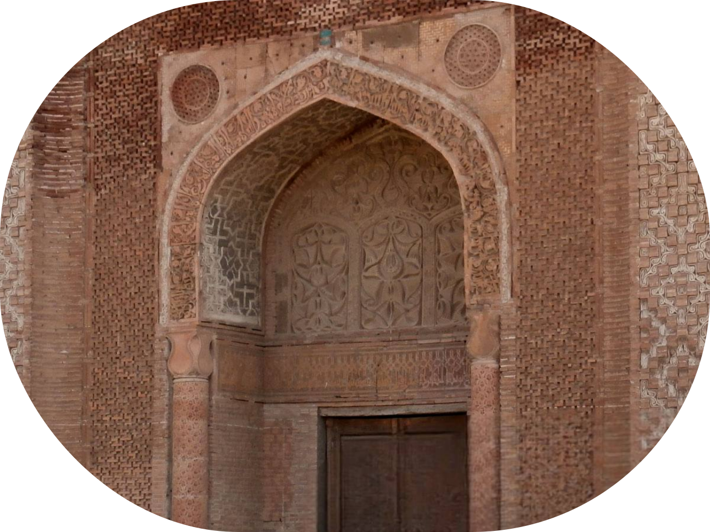
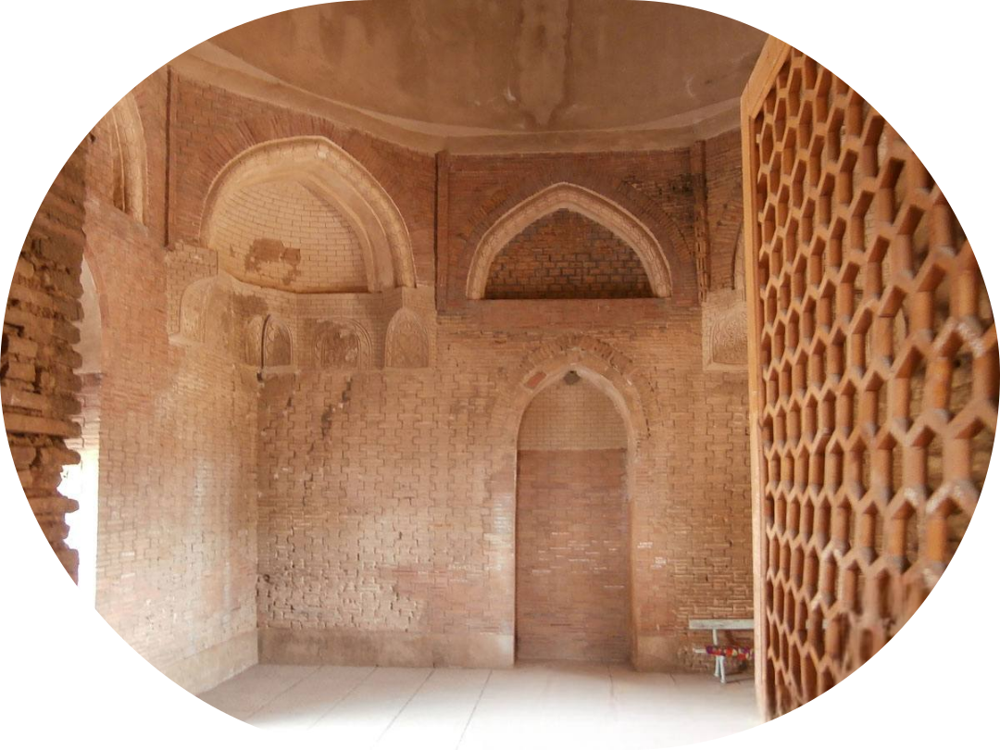

Узген
Зарождение и расцвет Узгена
Город Узген известен с древности и был основан еще в эпоху Кушанского царства (I–III века н. э.). Однако наибольшего расцвета он достиг в XI-XII веках, когда находился под властью династии Караханидов. В этот период Узген стал одним из главных городов государства, выполняя роль второго по значимости центра после Баласагуна. Именно тогда здесь началось активное строительство культовых и административных зданий, включая мавзолеи и минарет, которые сохранились до наших дней.
Зарождение и расцвет Узгена
Город Узген известен с древности и был основан еще в эпоху Кушанского царства (I–III века н. э.). Однако наибольшего расцвета он достиг в XI-XII веках, когда находился под властью династии Караханидов. В этот период Узген стал одним из главных городов государства, выполняя роль второго по значимости центра после Баласагуна. Именно тогда здесь началось активное строительство культовых и административных зданий, включая мавзолеи и минарет, которые сохранились до наших дней.
Мавзолеи Караханидов
Мавзолеи Узгенского комплекса были построены для захоронения представителей правящей династии Караханидов. Они расположены в одном ряду и отличаются уникальной архитектурой с богатым декоративным убранством из резного кирпича и терракоты.
- Центральный мавзолей (построен в начале XI века) – считается старейшим из трех. Его купол и портал выполнены в строгих формах с минимальным орнаментом.
- Северный мавзолей (конец XI века) – украшен сложными геометрическими и растительными орнаментами, его фасад богато декорирован узорчатой кладкой.
- Южный мавзолей (XII век) – является самым поздним и наиболее украшенным, в нем заметно влияние более поздних исламских архитектурных традиций.
Мавзолеи построены из жженого кирпича и имеют уникальный стиль, который сочетает элементы среднеазиатской и персидской архитектуры.
Узгенский минарет
Минарет был возведен примерно в то же время, что и мавзолеи, и использовался как сигнальная башня и место для созыва на молитву. Первоначально его высота составляла около 45 метров, но в результате землетрясений и разрушений он уменьшился до 27,5 метров.
Судьба комплекса в последующие века
После падения Караханидов в XIII веке значение Узгена постепенно снизилось, а сам архитектурный комплекс пришел в запустение. В период правления Тимуридов и Кокандского ханства некоторые элементы зданий были частично восстановлены, но в целом они оставались в полуразрушенном состоянии.
В XX веке начались реставрационные работы, направленные на сохранение уникального исторического наследия. В 1923 году Узгенский комплекс был взят под охрану государства, а в 1970-х годах проведены масштабные реставрационные работы, укрепившие уцелевшие постройки.
Современное значение
Сегодня Узгенский архитектурный комплекс является одним из ключевых исторических памятников Кыргызстана и включен в список охраняемых объектов культурного наследия. Он привлекает исследователей, историков и туристов, которые хотят познакомиться с богатым наследием Караханидской эпохи. Комплекс также используется для культурных и религиозных мероприятий, сохраняя свое значение спустя столетия.
Таким образом, Узгенский архитектурный комплекс является не только историческим памятником, но и свидетельством величия Караханидов, их архитектурного мастерства и культурного наследия, которое продолжает вдохновлять новые поколения.